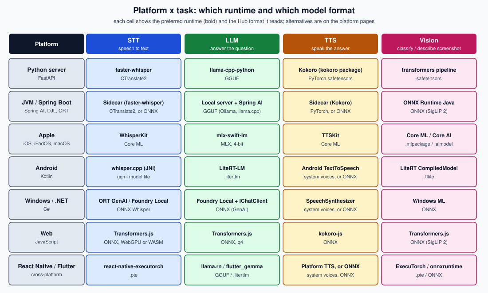

Hugging Face & On-Device Models
|
This content was generated with the assistance of AI and should be verified against the official documentation before being relied on in production. |
Examples across this sub-section were written against the following versions, all read from PyPI, npm, Maven Central,
NuGet, the projects' release pages and their official documentation on 2026-09-30. Hugging Face libraries:
huggingface_hub 2.0.0 (released 2026-09-24; it ships the hf command-line client), transformers 5.17.0 (PyTorch
only), safetensors 0.8.0, datasets 5.0.1, accelerate 1.15.0, peft 0.21.1, trl 1.14.1, bitsandbytes 0.50.2,
sentence-transformers 6.1.0, optimum 2.3.0 (and, in a separate environment, optimum-onnx 0.1.0, which pins optimum 2.1.x), smolagents 1.26.0 and gradio 6.29.0.
Runtimes: ONNX Runtime 1.30.0, llama.cpp v0.5.0, llama-cpp-python 0.3.35, faster-whisper 1.2.1 (CTranslate2
4.8.2), kokoro 0.9.4, Piper 1.8.0, mlx-lm 0.31.3, coremltools 9.0, LiteRT 2.2.0, LiteRT-LM 0.17.1, litert-torch
0.9.4, ExecuTorch 1.4.0 (the Maven Central executorch-android artifact; the PyPI and GitHub releases have moved on to 1.5.1), Transformers.js (@huggingface/transformers) 4.3.0, react-native-executorch 0.10.4, DJL
0.38.0, swift-transformers 1.3.4, mlx-swift-lm 3.31.4 and argmax-oss-swift v1.1.0. Platforms: iOS, iPadOS and
macOS 27 with Xcode 27 (for Core AI), Android with Kotlin, Windows with .NET 8 or later, and browsers with WebGPU. The
Python, Java and Spring baseline is shared with the rest of the AI section: Python 3.12 with PyTorch 2.14.0 and FastAPI
0.142.1, Java 21, Spring Boot 4.1, Spring AI 2.0.1 and LangChain4j 1.20.2, and Node.js 24 — the same as
Running LLMs Locally and LLM Foundations & Prompting.
Facts that could not be confirmed on a page are hedged there (for example, the Apple page lists which of its Swift
snippets were not built or run, although every Apple API name it uses was read from Apple’s documentation), and
model licences and gating are always properties of one repository: read the model card of the exact model you ship. If
a page and this baseline disagree after a later update, trust this baseline.
The obtain, convert, integrate workflow
Every page of this sub-section is one step of a three-stage loop. Obtain a model: find it on the Hub, read its card, check its licence and size, and download it. Convert it if the runtime you need does not already have a published copy in its own format: GGUF, ONNX, MLX, Core ML or Core AI, LiteRT, ExecuTorch. Integrate it: load it from a Python or Spring Boot service, from a native app, or in a browser, and decide how the weights reach the device. Adapting the model with PEFT or TRL is an optional side trip between the first two stages.
search, filters, model card"] FIND --> CHECK{"Licence, gating
and size acceptable?"} CHECK -->|"no"| FIND CHECK -->|"yes"| GET["Download
hf download / hf_hub_download"] GET --> FMT{"Does a published copy
exist in the runtime's format?"} FMT -->|"yes: GGUF, ONNX, MLX, LiteRT"| INT FMT -->|"no"| CONV["Convert and quantize
GGUF, ONNX, Core ML, Core AI,
LiteRT, MLX, ExecuTorch"] GET -.->|"optional"| TUNE["Fine-tune
PEFT / TRL"] TUNE -.-> CONV CONV --> INT["Integrate
server, native app or browser"] INT --> SHIP["Ship
model delivery, licence notices,
offline mode"]
The first stage is two commands, shown below with the current hf client and the huggingface_hub Python API. The token
is read from the HF_TOKEN environment variable and is only needed for gated or private repositories; never paste it
into a file or a command line.
export HF_TOKEN="<your access token>" # only for gated or private repositories
# The safetensors weights of a model into the shared cache (add patterns for config files)
hf download openai/whisper-small.en --include "*.safetensors"
# One GGUF file into a folder you can ship with an application
hf download ggml-org/gemma-3-1b-it-GGUF gemma-3-1b-it-Q4_K_M.gguf --local-dir ./models
# From now on, forbid every network call to the Hub
export HF_HUB_OFFLINE=1Official reference: Hugging Face — hf CLI guide. The
details (authentication, gated models, cache management, HF_HOME, Xet storage) are on
Hub Essentials.
from huggingface_hub import hf_hub_download, snapshot_download
gguf_path = hf_hub_download(
repo_id="ggml-org/gemma-3-1b-it-GGUF",
filename="gemma-3-1b-it-Q4_K_M.gguf",
)
model_dir = snapshot_download(
repo_id="openai/whisper-small.en",
allow_patterns=["*.safetensors", "*.json", "*.txt"],
)
print(gguf_path, model_dir)Official reference: Hugging Face — Download files from the Hub.
The convert stage is one command per target format. The exact commands, their flags and the quality trade-offs are on Conversion & Quantization; the list of formats and which runtime reads which is on Model Formats.
# GGUF for llama.cpp, Ollama and llama-cpp-python (run from a llama.cpp checkout)
python convert_hf_to_gguf.py ./Qwen3-0.6B --outfile qwen3-0.6b-bf16.gguf --outtype bf16
./llama-quantize qwen3-0.6b-bf16.gguf qwen3-0.6b-Q4_K_M.gguf Q4_K_M
# ONNX for ONNX Runtime, Transformers.js and the JVM and .NET runtimes
pip install "optimum-onnx[onnxruntime]"
optimum-cli export onnx --model distilbert/distilbert-base-uncased-finetuned-sst-2-english ./onnx-outOfficial reference: llama.cpp — quantize
README and Optimum ONNX — Export a model.
optimum-onnx 0.1.0, the latest release on PyPI on 2026-09-30, pins optimum~=2.1.0 and
transformers>=4.36,<4.58, so installing it downgrades a transformers 5 environment; run the export in a separate
virtual environment (for example python -m venv .venv-onnx) and keep the transformers 5 baseline in your main one.
The integrate stage is the rest of the sub-section, and the running scenario below shows what it looks like on each platform.
DocsAssistant goes offline
DocsAssistant, the running example of this site’s AI and vector-database sections, normally calls hosted APIs. In this sub-section it goes offline: one example app per platform performs the same four tasks with models from the Hub and no network call at run time.
| Task | Models | Where they are catalogued |
|---|---|---|
Transcribe a spoken question |
Whisper ( |
|
Answer it with a small local LLM |
Gemma 4 E2B ( |
|
Speak the answer |
Kokoro ( |
|
Classify or describe a screenshot |
SigLIP 2 ( |
Each platform page implements the four tasks in its own language, and each snippet is followed by its official documentation link. Model IDs on the pages were read from the Hub when the pages were written; confirm that an ID still exists and re-read its licence before you ship it.
| Platform and language | Page | What the page wires together |
|---|---|---|
Python backend (FastAPI) |
faster-whisper for transcription, |
|
Spring Boot (Java) |
Spring AI in front of a local server for chat, in-process ONNX embeddings, and a sidecar or ONNX for audio. |
|
iOS, iPadOS and macOS (Swift) |
WhisperKit and TTSKit from |
|
Android (Kotlin) |
whisper.cpp through JNI, LiteRT-LM with a |
|
Windows (C#) |
ONNX Runtime GenAI, Foundry Local behind |
|
Browser (JavaScript) |
Transformers.js pipelines in a Web Worker on WebGPU or WASM; React Native and Flutter variants on the same page. |
|
Hosted fallback (Python and JavaScript) |
The cloud counterpart through the Inference Providers router, for prototyping and for devices that cannot run a model. |
The decision matrix
The matrix answers the question every integration starts with: on this platform, for this task, which runtime should I try first, and which Hub format does it read? Each cell names the preferred runtime and the format of the weights it loads. It is a starting point, not a guarantee: a cell holds only while a package maintainer keeps exporting and testing the model, so check the platform page and the model card before you commit.

The same matrix as a table, with the page that explains each row:
| Platform | STT | LLM | TTS | Vision |
|---|---|---|---|---|
Python server (page) |
faster-whisper, CTranslate2 format |
|
Kokoro through the |
|
JVM and Spring Boot (page) |
A sidecar running faster-whisper, or an ONNX Whisper |
A local server (Ollama, llama.cpp) behind Spring AI, GGUF |
A Kokoro sidecar, or an ONNX export |
ONNX Runtime Java with an ONNX SigLIP 2, or a multimodal local server |
Apple (page) |
WhisperKit, Core ML |
|
TTSKit, Core ML |
Core ML or Core AI image encoder ( |
Android (page) |
whisper.cpp through JNI, ggml model file (or Moonshine on LiteRT) |
LiteRT-LM, |
Android |
LiteRT |
Windows and .NET (page) |
ONNX Runtime GenAI or Foundry Local, ONNX Whisper (or Whisper.net) |
Foundry Local behind |
|
Windows ML, ONNX |
Web (page) |
Transformers.js, ONNX on WebGPU or WASM |
Transformers.js |
|
Transformers.js |
React Native and Flutter (page) |
|
|
A native or platform TTS, or ONNX through |
ExecuTorch |
Three rules explain most of the matrix. The format follows the runtime: GGUF for llama.cpp and the tools built on it,
ONNX for ONNX Runtime and everything that embeds it (Java, .NET, browsers, Windows ML), MLX and Core ML or Core AI for
Apple, .tflite and .litertlm for Google’s stack, .pte for ExecuTorch. Chat LLMs on a server are best served, not
embedded: a JVM or .NET service points at a local server rather than loading the model itself. And the operating system
sometimes already ships the model: Android’s Gemini Nano, Windows' built-in language and text-recognition models and
Apple’s system model need no Hub download at all, at the cost of a fixed, smaller feature set and a limited device list
(see Android, Windows & .NET and
Apple Intelligence and Machine Learning).
Recent renames and deprecations
Older tutorials and the books in the bibliography pre-date a wave of renames in 2025 and 2026. Code that follows them usually still tells you what it does, but the name, the repository or the documentation host has moved. Every row was re-checked against the official sources on 2026-09-30 except where the last column says otherwise.
| Old | Now | Status on 2026-09-30 |
|---|---|---|
|
The |
Confirmed. |
The free, serverless Inference API ( |
Inference Providers: the OpenAI-compatible router and |
Confirmed on the pages; the router base URL is on Inference Providers & Spaces. |
smolagents |
|
Confirmed in the smolagents 1.26.0 documentation read for Inference Providers & Spaces. |
Optimum’s ONNX export ( |
The separate |
Confirmed; see Conversion & Quantization. The 0.1.0 release (still the latest on PyPI on 2026-09-30) pins |
|
|
Confirmed against the v5 migration guide; the table of edits is on Transformers Pipelines. |
Gradio 5 and earlier tutorials |
Gradio 6 (6.29.0 on the check date) |
Confirmed. |
|
|
Confirmed. |
TensorFlow Lite (TFLite) |
LiteRT (repository |
Confirmed. |
MediaPipe LLM Inference |
Maintenance only; migrate to LiteRT-LM |
Confirmed on Google’s MediaPipe page; migration notes are on Android. |
Documentation at |
|
Confirmed; the bibliography uses the new host. |
The WhisperKit repository |
|
Confirmed. |
|
|
Repository confirmed; see Apple Platforms. |
|
|
Confirmed, and the GPL licence matters for shipping in an app (see Choosing Models & Licences). The voices are still listed under |
Moonshine under |
|
Confirmed. |
DirectML |
In "sustained engineering"; use Windows ML for Windows-based ONNX Runtime deployments |
Confirmed on Microsoft Learn; see Windows & .NET. |
Phi Silica |
Microsoft’s Phi Silica documentation page announces that a new on-device model, Aion Instruct, is replacing it in late 2026 |
A vendor announcement read on the official page; it was not tested and the schedule may move, so isolate Phi Silica calls behind your own interface (details on Windows & .NET). |
AutoAWQ |
Deprecated; its functionality moved into |
|
Core ML as the only Apple route |
Core ML plus Core AI ( |
Core AI and the |
What’s covered
The Hub
-
Hub Essentials — model, dataset and Space repositories, searching and filtering, model cards, tokens and gated models, the
hfCLI, thehuggingface_hub2.0 API, the cache andHF_HOME, offline mode and Xet storage. -
Choosing Models & Licences — reading a model card, size versus hardware, licence classes from Apache-2.0 to AGPL-3.0 and non-commercial, gated access, leaderboards and a licence checklist for shipping in an app.
-
Model Formats — safetensors versus pickle, GGUF, ONNX, MLX, Core ML and Core AI, LiteRT, ExecuTorch and CTranslate2, and which runtime reads which format.
Python and models
-
Transformers Pipelines — the v5
pipeline()per task, theAuto*classes and processors, device and dtype,transformers serveand the v4 to v5 migration. -
Speech Models: STT & TTS — a curated catalogue of Whisper, Parakeet, Moonshine, Kokoro, Piper and the other speech models, with licence, size, languages and streaming support.
-
Vision Models — SigLIP 2, DINOv2 and DINOv3, YOLO under AGPL-3.0 versus RT-DETRv2 and D-FINE, SAM 2.1 and SAM 3, Florence-2, SmolVLM, Qwen-VL and FastVLM, with code for classification, detection, segmentation and captioning.
-
Small LLMs & Embeddings — Gemma 4, Phi-4-mini, Qwen3 and Qwen3.5, SmolLM3 and Llama 3.2, the MiniLM, Qwen3-Embedding and EmbeddingGemma embedding models, their official quantized repositories and memory sizing.
-
Conversion & Quantization — GGUF, ONNX, Core ML, Core AI, LiteRT, MLX and ExecuTorch conversion, and GPU-server quantization with bitsandbytes, GPTQModel and llm-compressor.
-
Fine-Tuning with PEFT & TRL — when to fine-tune, the LoRA update, QLoRA, TRL
SFTTrainerand DPO, dataset preparation, merging adapters and exporting them for on-device use.
Integrating into apps
-
Python Backends — FastAPI with models loaded once in
lifespan, keeping the event loop free, batching, streaming, the DocsAssistant endpoints, ONNX Runtime sessions and text-embeddings-inference. -
Java & Spring Boot — DJL, ONNX Runtime Java, Spring AI
TransformersEmbeddingModel, LangChain4j in-process embeddings, the caveats of Jlama and java-llama.cpp, and the recommended local-server path. -
Apple Platforms — Core ML versus Core AI,
swift-transformers, MLX, WhisperKit and TTSKit,LanguageModelExecutor, the llama.cpp XCFramework and on-demand model download. -
Android — LiteRT and the
CompiledModelAPI, LiteRT-LM, Gemini Nano through ML Kit GenAI, ONNX Runtime Mobile, ExecuTorch, llama.cpp and whisper.cpp, and model delivery. -
Windows & .NET — Windows ML, the Windows AI APIs, Foundry Local, ONNX Runtime GenAI, the DirectML status and
Microsoft.Extensions.AI. -
Web & Cross-Platform — Transformers.js on WebGPU or WASM, ONNX Runtime Web, ExecuTorch, React Native and Flutter.
-
Inference Providers & Spaces — the hosted counterparts: the Inference Providers router, Inference Endpoints, Gradio 6, Spaces and ZeroGPU, smolagents, and when to prefer local.
Cheat sheet
-
Cheat Sheet (PDF) — the whole sub-section on one printable A4 page.
Related sub-sections: LLM Foundations & Prompting explains the models themselves and how to prompt them; Running LLMs Locally covers the engines (Ollama, llama.cpp, vLLM) that serve the GGUF and safetensors models found here; LangChain and Spring AI wrap local and hosted models in application code; Model Context Protocol (MCP) and AI Agents build on them; and Vector Databases & RAG uses the embedding models. Platform basics live in Apple Intelligence and Machine Learning, Android, React Native, Spring Boot and Python. Real-time voice pipelines belong to the Voice Agents sub-section, serving at scale to LLMOps: Serving at Scale, the security of the model supply chain to AI Supply Chain Security, FastAPI itself to the planned Python FastAPI section, and Windows packaging to the planned Windows Apps section.
Bibliography
The following sources were consulted while preparing this sub-section’s pages. Every command, flag, environment variable, package name, API name, model ID, licence and version was checked against the projects' official documentation, model cards, release pages and package registries on 2026-09-30 — never copied from a book. Where something could not be confirmed or tested, the page that cites it says so.
Requester-provided books, consulted for concepts only and never the source of an example:
-
Lee, Wei-Meng. Hugging Face in Action. Manning Publications, 2026. ISBN 978-1-63343-671-8. Publisher page: https://www.manning.com/books/hugging-face-in-action . Official code repository: https://github.com/weimenglee/HuggingFaceInAction . Consulted for the Hub and model-card workflow, the
pipeline()versusAuto*classes distinction, vision models (detection, classification, segmentation, CLIP),datasets, fine-tuning withTrainer, smolagents, Gradio and Spaces, and local GGUF models. It is outdated on thehuggingface-clicommand (nowhf), the serverless Inference API (now Inference Providers),HfApiModel(nowInferenceClientModel), transformers v4 idioms and GPT4All; those pages show the current API instead. -
Alammar, Jay, and Maarten Grootendorst. Hands-On Large Language Models: Language Understanding and Generation. O’Reilly Media, Sep 2024. ISBN 978-1-098-15096-9. Publisher page: https://www.oreilly.com/library/view/hands-on-large-language/9781098150952/ . Official code repository: https://github.com/HandsOnLLM/Hands-On-Large-Language-Models . Consulted (Chapters 2, 4, 5 and 9 to 12) for tokenizers, classification with task models versus embeddings, CLIP and BLIP-2, training embedding models, fine-tuning BERT-style models and SetFit, and QLoRA (NF4 through bitsandbytes, LoRA rank and alpha, TRL
SFTTrainer, merging) and DPO. Its library calls predate transformers v5 and TRL 1.x. -
Huyen, Chip. AI Engineering: Building Applications with Foundation Models. O’Reilly Media, Dec 2024. ISBN 978-1-098-16630-4. Publisher page: https://www.oreilly.com/library/view/ai-engineering/9781098166298/ . Official code repository: https://github.com/chiphuyen/aie-book . Consulted (Chapter 7, fine-tuning, and Chapter 8, dataset engineering) for when to fine-tune, the memory arithmetic of fine-tuning, PEFT, LoRA and QLoRA, merging adapters, and dataset curation, synthesis and deduplication.
-
Wilson, Steve. The Developer’s Playbook for Large Language Model Security. O’Reilly Media, Sep 2024. ISBN 978-1-098-16220-7. Publisher page: https://www.oreilly.com/library/view/the-developers-playbook/9781098162191/ . No official code repository. Consulted (Chapter 9) for the model supply chain: pickle malware, model cards and an ML bill of materials.
oreilly.com answers automated fetches with an HTTP 403 response, but the publisher pages above are live pages when opened
in a browser.
Official documentation
Hugging Face Hub:
-
Hub documentation, Models, Datasets overview and Hub API endpoints
-
Storage backends and Xet
-
GGUF on the Hub, MLX on the Hub, Transformers.js on the Hub and Local apps
-
onnx-community, mlx-community, litert-community and ggml-org (organisations publishing pre-converted models)
-
GGUF-my-repo Space, Open ASR Leaderboard, MTEB leaderboard and LMArena
huggingface_hub:
Hugging Face libraries:
-
Transformers, Installation, Pipelines, Pipeline tutorial, Loading models, Auto classes, Serving and Fine-tuning
-
Transformers v5 migration guide and Transformers v5 announcement
-
SigLIP 2, DINOv2, DINOv3, RT-DETRv2, D-FINE, SAM 2, SAM 3, Florence-2, SmolVLM and Qwen3-VL
-
bitsandbytes, SetFit and Sentence Transformers with its training overview
-
Transformers.js, pipeline guide, pipelines API and environment API
Model cards (linked for the licence, gating and usage of each model named on the catalogue pages):
-
Speech to text: openai/whisper-large-v3, openai/whisper-large-v3-turbo, distil-whisper/distil-large-v3.5, Systran/faster-whisper-large-v3, onnx-community/whisper-large-v3-turbo, onnx-community/whisper-tiny.en, nvidia/parakeet-tdt-0.6b-v3, nvidia/canary-1b-v2, moonshine-ai/moonshine-base, moonshine-ai/moonshine-streaming-medium and onnx-community/moonshine-base-ONNX
-
Text to speech: hexgrad/Kokoro-82M, onnx-community/Kokoro-82M-v1.0-ONNX, rhasspy/piper-voices, parler-tts/parler-tts-mini-v1.1, nari-labs/Dia-1.6B-0626, canopylabs/orpheus-3b-0.1-ft, ResembleAI/chatterbox, kyutai/tts-1.6b-en_fr, kyutai/tts-voices, microsoft/VibeVoice-1.5B, microsoft/VibeVoice-Realtime-0.5B, sesame/csm-1b and coqui/XTTS-v2
-
Vision: google/siglip2-base-patch16-224, onnx-community/siglip2-base-patch16-224-ONNX, facebook/dinov3-vits16-pretrain-lvd1689m, PekingU/rtdetr_v2_r50vd, ustc-community/dfine-small-coco, facebook/sam2.1-hiera-small, facebook/sam3, florence-community/Florence-2-base, HuggingFaceTB/SmolVLM-256M-Instruct, HuggingFaceTB/SmolVLM2-2.2B-Instruct, Qwen/Qwen3-VL-2B-Instruct and apple/FastVLM-0.5B
-
Language and embedding models: google/gemma-4-E2B-it, google/gemma-4-E4B-it, ggml-org/gemma-4-E2B-it-GGUF, google/gemma-3n-E2B-it, google/gemma-3-4b-it, microsoft/Phi-4-mini-instruct, Qwen/Qwen3-4B, Qwen/Qwen3.5-4B, onnx-community/Qwen3-0.6B-ONNX, HuggingFaceTB/SmolLM3-3B, meta-llama/Llama-3.2-3B-Instruct (see also Meta — Llama quantization guide), sentence-transformers/all-MiniLM-L6-v2, Qwen/Qwen3-Embedding-0.6B and google/embeddinggemma-300m
-
Google — Gemma documentation, NVIDIA — NeMo ASR models, Ultralytics — YOLO documentation, Ultralytics — Licensing and Ultralytics — AGPL-3.0 software licence
Inference Providers and Spaces:
Runtimes and engines:
-
ONNX Runtime, execution providers, QNN execution provider, Python API, JavaScript API, ONNX Runtime Web, WebGPU execution provider, mobile tutorials and get started on mobile
-
ONNX Runtime GenAI, repository, model builder and C# examples
-
llama.cpp, quantize README, imatrix README, convert_lora_to_gguf.py, XCFramework, Android example and whisper.cpp with its Android example
-
Kokoro, kokoro-js, Piper, Moonshine, Kyutai delayed streams modeling and VibeVoice
Python backends:
Java and Spring:
Apple:
-
Core ML, VNCoreMLRequest and coremltools; see also overview, converting PyTorch models and quantization
-
Core AI, integrating models, compiling ahead of time, coreai-models and coreai-torch with its documentation
-
Foundation Models, LanguageModelExecutor, running a Core AI model in a session and WWDC26 session 339
-
MLX, mlx-lm, mlx-swift-lm, its documentation, usage guide and mlx-swift-examples
-
Background Assets, downloading asset packs and testing asset packs locally
Android and Google:
Windows and .NET:
-
Windows ML overview, get started, run ONNX models, run generative ONNX models, initialize, register and select execution providers, supported execution providers, distributing your app and the winml CLI with its documentation
-
ONNX Runtime for C#, ONNX Runtime GenAI C# API, Microsoft.ML.OnnxRuntime and Microsoft.ML.OnnxRuntimeGenAI
-
Microsoft.Extensions.AI, IChatClient and IEmbeddingGenerator
Web and cross-platform:
Specifications and standards
-
WebGPU — W3C Technical Report, the API behind the
webgpudevice of Transformers.js and ONNX Runtime Web -
Server-sent events — HTML Standard, the streaming format of the FastAPI examples
-
GNU Affero General Public License v3.0, the licence of Ultralytics YOLO
Papers and engineering articles
-
Radford et al. — Robust Speech Recognition via Large-Scale Weak Supervision (Whisper)
-
Gandhi et al. — Distil-Whisper: Robust Knowledge Distillation via Large-Scale Pseudo Labelling
-
Jeffries et al. — Moonshine: Speech Recognition for Live Transcription and Voice Commands
-
Zeghidour et al. (Kyutai) — Streaming Sequence-to-Sequence Learning with Delayed Streams Modeling
-
Zhai et al. — Sigmoid Loss for Language Image Pre-Training (SigLIP)
-
Oquab et al. — DINOv2: Learning Robust Visual Features without Supervision
-
Lv et al. — RT-DETRv2: Improved Baseline with Bag-of-Freebies for Real-Time Detection Transformer
-
Peng et al. — D-FINE: Redefine Regression Task in DETRs as Fine-grained Distribution Refinement
-
Xiao et al. — Florence-2: Advancing a Unified Representation for a Variety of Vision Tasks
-
Vasu et al. — FastVLM: Efficient Vision Encoding for Vision Language Models
-
Hu et al. — LoRA: Low-Rank Adaptation of Large Language Models
-
Dettmers et al. — QLoRA: Efficient Finetuning of Quantized LLMs
-
Rafailov et al. — Direct Preference Optimization: Your Language Model Is Secretly a Reward Model
-
Tunstall et al. — Efficient Few-Shot Learning Without Prompts (SetFit)
These books are consulted references, not the primary source of any example on this sub-section’s pages. On any discrepancy between a book and a tool’s own official documentation, that documentation is authoritative.